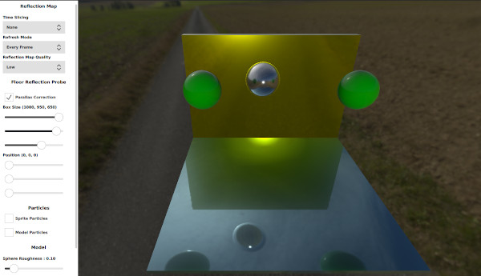

Qt Quick 3D - Reflection Probes Example
Demonstrates the use of reflection probes in Qt Quick 3D.

This example demonstrates the features of the reflection probes. It provides the user with a panel to select different properties that will affect how the probe is going to render the cube map as well as how the models will use this cube map to reflect their surroundings.
The scene
The scene consists of some models, two particle systems, a light probe, and two reflection probes. There are three spheres in the middle of the scene as well as two cubes that act as a floor and a wall. The two particle systems in the middle of the scene are disabled by default and can be enabled from the settings panel. They can be used to show how the particles work with the reflection probes. The first reflection probe is positioned at the origin and the other one is moving with the sphere in the middle. A model will use the cube map captured by the nearest reflection probe when it is reflecting its surroundings.
Settings panel
Reflection Map Settings
The user can control how the reflection probe renders the reflection cube map. Depending on the selected settings, the performance will vary drastically.
Time Slicing controls how often each face of the reflection map is rendered. For example, selecting Individual Faces will make the reflection probe render one face per frame. This yields better performance but at the cost of quality.
Refresh Mode controls how often the reflection probe will render the whole reflection map. Selecting First Frame will make the reflection probe render the reflection map once. This has better performance but will produce undesired effect when used in a scene which has animations.
Finally, Reflection Map Quality controls the resolution of the generated cube map.
Reflection Probe Settings
The reflection probe box size is used to determine which objects lie inside the reflection probe. If an object lies inside the probe it will use the map generated by this probe. The box size is also used with parallax correction. The reflection map is considered to be infinitely far away when rendered. Although this can work for outdoor scenes, the indoor scenes will produce undesired effects. The parallax correction makes the reflection map take into account the box size as well as the camera position. Disabling the parallax correction will affect how the floor reflects its surroundings. An indoor scene should use a reflection probe with the same size as the indoor area.
The probe position is used to move the probe in the scene. It will also affect where the probe is going to render the cube map from.
Particles Settings
These settings could be used to add some particles to the scene to show how reflection probes work with particles. Both 3D and Sprite particles appear in the reflection maps but only the 3D particles can use the reflection map to reflect its surroundings.
Model Settings
The user can control the roughness of the material used by the sphere which will affect the reflections rendered by this model. The user can also choose if the model should receive reflections or not by using the receives reflections check boxes.
Files:
- reflectionprobes/CMakeLists.txt
- reflectionprobes/Example/SettingsPanel.qml
- reflectionprobes/Example/main.qml
- reflectionprobes/Example/qmldir
- reflectionprobes/Example/reflectionprobes_qml_module_dir_map.qrc
- reflectionprobes/SettingsPanel.qml
- reflectionprobes/main.cpp
- reflectionprobes/main.qml
- reflectionprobes/qml.qrc
- reflectionprobes/reflectionprobes.pro
- reflectionprobes/resources.qrc
Images:
{kind=link}
{kind=link}
{kind=link}
{kind=link}